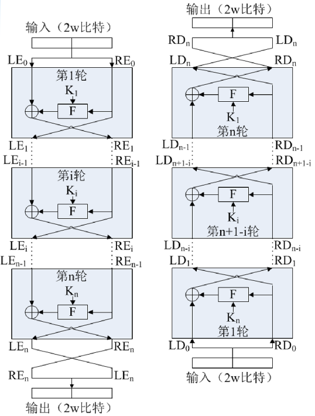
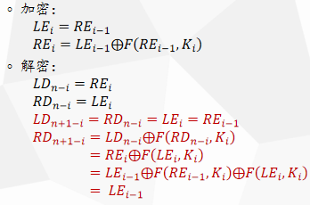
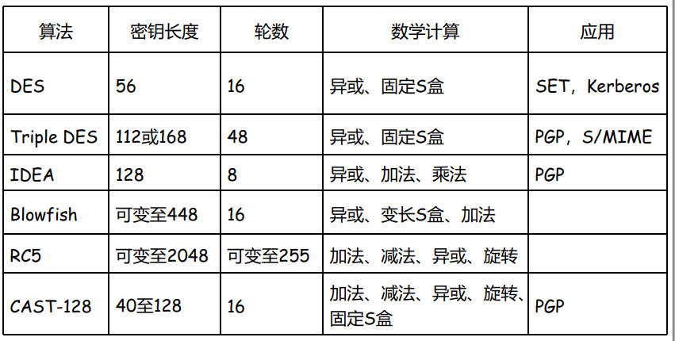
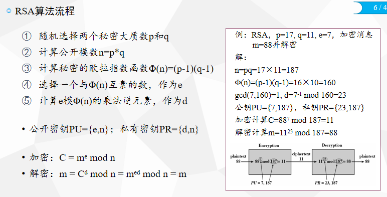
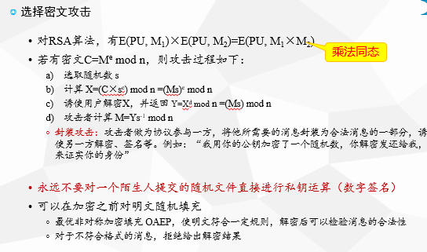
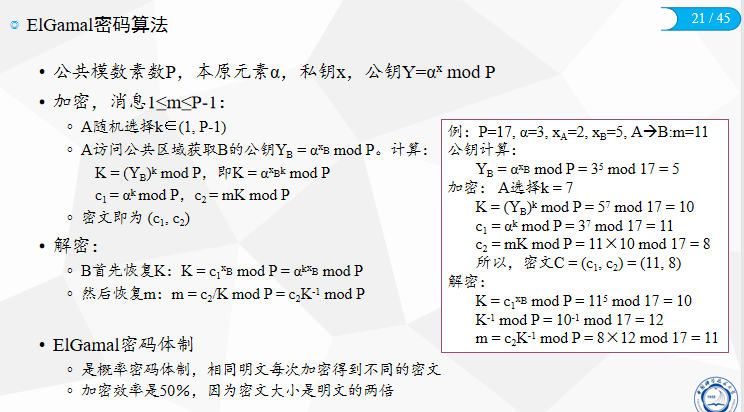
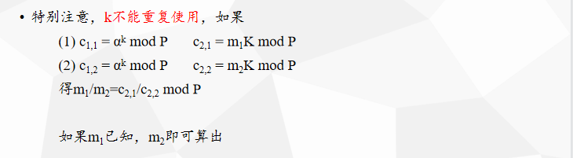
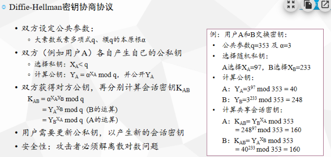

密码学
本篇概要记录本科阶段密码学课程相关知识，以结论性内容为主，用于个人查找。
Chapter 1 古典密码学
信息安全的范畴（CIAAA）
古典密码使用
- 尽量多密钥
- 扩散混淆
- 每个密文尽量由多的密钥字符和不相干的明文字符决定
- 建议交替使用代换和置乱算法，且在之间插入一个变换
统计频率，防御使用扩散/混淆技术，扩散并不会改变冗余度（只有压缩可以），将语言结构（冗余）分散到更大范围的密文。混淆增加密钥空间的坐标维数和方程的复杂性。 3.可能词攻击：特定位置存在的词语或者短语和一些高频词，防御：密文字由尽量多的密钥和不相关的明文字决定。
Chapter 2 现代密码学
攻击模型–黑盒3
- 黑盒：不知道密钥和内部结构
- 一般假设除了明文和密钥外所有的信息都可能泄露【柯克霍夫原则】
- 攻击目的：特定条件下，解读密文含义
| 攻击类型 | 攻击者的能力 | 备注 |
|---|---|---|
| 唯密文攻击 COA | 直接分析 | 最难 |
| 已知明文攻击 KPA | 用同一密钥加密的一个或多个明文－密文对 | 无法构造 |
| 选择明文攻击 CPA | 可选择特定明文，并获得对应的密文 | 构建明文，有加密器（含key） |
| 选择密文攻击 CCA | 可选择特定密文，并获得对应的明文 | 构建密文，有解密器（含key） |
| 选择文本攻击 CCA | 可选择特定密文/明文，并获得对应明文/密文 | |
| 相关密钥攻击Related-key | 有确定关系的两个密钥对应的明文-密文对 | 根据密钥和明密文的关系 |
密码算法分类
- 引入确定型和概率型密码，后者加密产生密文子集，随机挑选，解密也是，针对字典攻击
- 引入对称和非对称密码【单钥密码体制】，前者开放性差，无密钥密码主要用于验证
- 引入分组密码（block）和序列密码【公钥密码体制】，前者将密文分块，后者使用长密钥流
对称密码：【密钥管理庞杂】【抗否认】
非对称密码：【加解密分离】【密钥分发简单】【互不相识秘密通信】【数字签名】
一般使用非对称加密密钥，大量数据使用对称。Hash用于检验完整性，也可以结合分对称密码进行身份认证。不确定身份使用调整应答。
认证三种方式，用户认证四种方向都可以。
数学模型
- 单向函数：从y找x计算上不可行
- 单向陷门函数：可逆函数，如果有暗门信息则容易从y找到x
剩余类
- 闭合系统：任意密文都有每个密钥对应的映射连入
- 单纯密码：明密文映射八字形，密钥作用相仿（映射相同），对应混合密码。
- 单纯密码的剩余类：互斥，明密文分别划分集合
- 凯撒密码：c=app，则m=bqq，crr在同一个剩余类中，共26个
- 周期为d的维吉尼亚，m和与m周期性等差d的明文在同一剩余类，d=2，apple和brqnf
- 剩余类的密文概率相等，与消息先验概率无关【密钥均匀分布】
- 消息的后验概率与所属剩余类有关，与具体密文无关【密文无助于分析后验概率】
- 密文和消息数目相同，为密钥数的因子
相似密码，如福尔摩斯跳舞的小人和字母代换
信息论相关
熵
- $ H(X,Y)≥H(X)$
条件熵使得信息蕴含减少
冗余
- D_N=N−H(M)
完美安全:窃听者无法从密文中获得任何消息，若信源有n个等概率信息，H=log n,完美安全需要有n个等概率密钥即有 log n信息密钥掩盖
完美安全定义
模糊度**：获得一定密文后消息或密钥的不确定度。乘积密码的模糊度不低于单独使用，**多加一重密没有坏处。当消息集设定使得密钥和消息信息量相同时（概率），密钥的模糊度和密文无关。
密钥的唯一解距离:唯密文攻击下，使得模糊度接近于零的最小密文长度。（密文越大，冗余越大越容易破解），仅理论分析。
理想安全系统：密钥和消息的模糊度不随着N的增大趋于零
强理想安全系统：密钥模糊度和N无关，这要求任意两个密钥将，一来一回映射到等概率消息。所以如果消息字母是等概率且相互无关的，任何闭合密码系统都是强理想安全。 实际安全系统要求在希望传输的字符范围内破译工作量足够高即可
Chapter 3 分组密码
- 密钥：使用4bit分组，完美安全时总共16种输入各有一个密钥（类似于一次一密），然后一个密钥有四位 即 n
Feistel结构
 DES
- 64位比特的明文分组输入实际使用56位，然后剩下的你用来做奇偶校验啥的都可
- 十六轮迭代
- 初始对数据块置乱，这个不提供安全性，就是知道是des加密的时候很容易搞出来，但是，密码不就是猜不知道吗
- 轮函数将右边数据扩展成48位，然后与子密钥异或。然后使用S盒替换，再置乱输出
双重des：中间相遇工具
问题：算法开销，64bits
3-DES
使用是哪个密钥对数据块进行DES操作，考虑兼容性
- DES-EEE3
- DES-EDE3：(3DES标准，兼容性考虑)
- DES-EEE2
- DES-EDE2
其他分组算法
IDEA （国际数据加密算法 ）：密钥长度为128位，它基于“相异代数群上的混合运算”设计思想算法，用硬件和软件实现都很容易，它比DES在实现上快得多
MD5（128） SHA1（160）SHA2（256）
Chapter4有限域上的分组密码
部分数论知识
Chapter5 分组密码工作模式
分组密码考虑分组之间的关联，以及考虑相同明文块不能有相同密文
ECB
-
唯一密钥加密所有密文
-
优点：并性效率，适用随机数据，错误不扩
缺点：不可重复，格式化数据易破解，明文差异小的话仅破解密码本
-
分组重放攻击
-
适用于：少明文
CBC
- 唯一密钥，密文需要与下一个明文异或
- iv公开，对于同一密钥不重复
- 攻击：密钥和iv；通过更改c控制下一个；更改iv；减位破坏
- 错误：传输错误则解密只会错两个
- 适用于：大量数据，认证
CFB
- 用key加密iv，然后选取s位作为密钥加密明文得到密文；密文进入iv中进行新一轮的加密。
- 解密过程拿原来的系统输入第一个密文，然后得到明文一，再将密文放进iv中重复加密的过程。
- 优点：不适应解密算法
- 缺点：数据流要暂停加密，速度受限制
- 适用于：数据以比特字节单位。低误码率的数据流加密认证
- 传输误码影响寄存器内的，然后自同步
OFB
- 反馈的数据是伪随机序列。
- 优点：很明显误码没事了，但是收发双方要同步，
- 一种vernam密码的变形，所以同一个密钥条件下iv不能重复使用
- 可以通过修改密文篡改明文
- 攻击：在明文中插入已知位，用同一密钥流再次加密则可以恢复
OFB：前面可以提前算，算完后再进行安全传输本地计算。
CTR
- 无反馈，加密输入计数器（流密码不能重复，计数器就不重复了）即同一个密钥下，计数器不能重复使用
- 很高效，可以预处理和处理高速链接，可以随机解密，同样安全，不用解密算法。
- 适用于：高速网络的数据加密
开头报文往往相同，如果密钥相同的话密文往往相同
对称密码的密钥管理
原则：难以窃取，窃取后没法用（时间和范围），密钥分配更新对用户透明（用户没感知）
产生：
- 密钥长度给出安全性的上限（算法不好评估）；越长成本储存计算成本大，消息延迟，管理分配困难，所以安全前提下越短越好
- 考虑生成密钥算法的安全性要比算法高，弱密钥避免，长密钥-hash-实际密钥
分配：
- a-人-b;c-人-ab；c-俩信道-ab
- 安全分配且存储更新
- KDC：集中式密钥分配中心：主密钥为KDC和密钥分享，加密会话密钥//双方会话密钥相同但是用不同的主密钥加密。即主密钥为KDC向 用户传递会话密钥。会话密钥是一次一密的
- 密钥的层次化管理，KDC完成密钥的中继分发，主密钥采取非对称密码途径分发，使用非密码方式保
- KDC会受到攻击：工作量得看用户的数量。层次化控制（树）：使主密钥分配密钥工作量减少，被危害的影响区域减小
- eg:A-KDC-请求会话密钥；KDC-A-会话密钥，请求报文，用b主密钥加密的b的会话密钥和a的id标识符；A-会话密钥-发信息-B；B-得到会话密钥，给A发消息;A用会话密钥加密回消息认证保证A有会话密钥.
验证：
- b要确定消息是a发的，a亲自送，派亲信，a主密钥加密，a数字签名，a亲信签名
- b确认密钥正确：发的时候顺便带个密文；哈希值；身份认证
使用：
- 密钥的层次化管理，会话密（session key）钥和主密钥
- 不同应用不同类型密钥
- 密钥连通：共享范围
- 分割：时间范围分割
- 连通分割：密钥嵌入标记限制使用方式（主密钥会话密钥。。）
- 截获密钥无法使用：密钥本身加识别串（密钥加密固定文字）
更新：
- 旧密钥协商。。旧密钥泄露了
- 身份认证
- 旧销毁
存储：
- 记忆
- 硬盘：一部分放在硬盘上
- 即插即用（集成密码和密钥，输入明文直接得到密文）
- 备份：分片分享时一种方案
- 密钥托管，有效期，生命期（加解密使用期限），会话密钥使用寿命：频繁影响网络性能但安全，连接协议则每次甚至一次多，无连接
秘密分享技术
作用：
- 密钥备份
- 多人合作
- 秘密分享：协作完成，备份数量不增加
（t,k）门限方案，n个分享，多于t个才能得到密文：拉格朗日插值算法
高级门限方案：
现代也有通过属性计算密钥分发给人员各自解密
Chapter6 序列密码
chapter 8 公钥密码
RSA
- [(a mod n) op (b mod n)] mod n = (a op b) mod n
- 快速指数算法
- e常选65537(即216+1)：仅有两个比特为1，乘法次数最小
小公钥攻击
e有时也选3或17
- 假设有三个用户的e都选择3，但模数分别为n1,n2,n3
- 若要向他们发送m，密文分别为C1=m3 mod n1, C2=m3 mod n2, C3=m3 mod n3
- 各用户的素数是随机生成的，因此模数n1,n2,n3两两互素的可能很大
- 由中国剩余定理可以计算C=CRT(n1,n2,n3,C1,C2,C3)
- 显然有C=m3 mod n1n2n3
- 由RSA算法规则，m<ni， 因此m3 < n1n2n3因而可以直接计算m=C1/3
共模攻击
可能会给多个用户分配相同的n（p和q由密钥管理中心保管，不公开），但给不同用户分配不同的e和d
-
若明文m用不同的公钥e1,e2加密，公共模数为n
-
则密文
-
不同用户的指数e往往是互素的，由扩展欧几里德算法可以找到r和s，满足re1+se2=1
-
有
-
r和s必有一个是负数，不妨设是r，则=m
扩展欧几里得：
欧几里得：
2
3
4
5
6
7
8
{
if(b==0)
{
return a;
}
return gcd(b,a%b);
}扩展：保留除法结果
2
3
4
5
6
7
8
9
10
11
12
13
14
15
16
17
18
19
20
21
22
23
24
25
using namespace std;
int exgcd(int a,int b,int &x,int &y)
{
if(b==0)
{ // 此时ax+b*0=a，返回a也就是那个18，如果是1的话则互素
x=1;
y=0;
return a;
}
int r=exgcd(b, a%b, x, y);
int t=y;
y=x-(a/b)*y; //
x=t;
return r;
}
int main()
{
int x,y;
exgcd(252,198, x, y);
cout<<"252x+198y=18的一个整数解为:"<<endl;
cout<<"x="<<x<<" "<<"y="<<y<<" "<<endl;
return 0;
}
Q:为什么在rsa中n不能取,其中r为较小的一个数字
如果传递的是加密后的d，即pow(d,e,n)=cipher已知。
1.假设pow(e,e,n)=e_c;则pow(d*e,e,n)=ciphere_c。
2.de=1(mod ()，其中=(p-1)p(q-1),此时phi和n有公因子p。
3.由多项式定理：(mod n)=(k+1)(mod n)=b +1（mod n）=a p+1（mod n）。这里k，a，b是系数，中间式子的二项式展开写成最后一个式子的形式。这个式子又等于ciphere_c
4.且由3可得：a p+1=ciphere_c (mod n),也就是说a p=ciphere_c -1（mod n）和n的公因子是，相当于获取了。在r较小的情况下可以对这个结果尝试进行开方，然后得到p，即可依次破解n,p,q。
ELGAMA
 离散对数密码体制，安全性基于DLP问题：y=g^x mod p给定p, g及y，求x
椭圆曲线密码ECC
椭圆曲线密码（Elliptic Curve Cryptography, ECC）是一种基于椭圆曲线数学理论的公钥密码体制。它与传统的RSA、Diffie-Hellman等公钥密码体制相比，在密钥长度相同的情况下，具有更高的安全性和更小的密钥尺寸，因此在现代密码学中得到广泛应用。
计算公钥
假设椭圆曲线方程为y^2 = x^3 + 2x + 2，模数为17，基点为G=(5,1)。Alice选择私钥a=7，需要计算出对应的公钥P。
通过基点G来计算出椭圆曲线上的所有点，直到找到一个点Q，使得Q=aG
点加：设椭圆曲线上的两个点P(x1, y1)和Q(x2, y2)，它们的加法运算P+Q=R(x3, y3)。具体计算方法如下(模数前提)，a是椭圆曲线方程中的常数项。
(1) 当P≠Q时，直线L通过P和Q，求得交点R：
m = (y2 - y1) / (x2 - x1)
x3 = $m^2 - x1 - x2 $
y3 =
(2) 当P=Q时，直线L为曲线的切线，求得交点R：
m =$ (3x1^2 + a) / 2y1 $
x3 = $m^2 - 2x1 $
y3 =
G=(5,1)
m=77/2=9/2=13
x=169-10=159-17*9=6
y=13(5-6)-1=13*16-1=207=3
2G=(6,3)；3G=(7,6)；4G=(5,16)；5G=(2,9)；6G=(16,13)；7G=(13,15)
私钥a=7对应的公钥P是P=7G=(13,15)。在实际应用中，使用更大的素数和更复杂的椭圆曲线方程，以提高安全性。
通信过程
假设Alice和Bob事先共享了一个椭圆曲线和一个基点G，这些参数可以公开。他们可以按照以下步骤来生成密钥对和加密通信：
- 生成密钥对
Alice选择一个随机数a作为私钥，通过椭圆曲线上的数学运算，计算出公钥P=aG。Bob也选择一个随机数b作为私钥，通过椭圆曲线上的数学运算，计算出公钥Q=bG。
- ECDSA数字签名
- 选择参数：首先，选择一个椭圆曲线E和一个基点G，这个基点的阶数为n。同时，选择一个私钥d，它是一个随机整数，且满足1 ≤ d < n。私钥d需要保密，不可泄露。然后，计算公钥Q = dG。
- 生成签名（私钥d）：假设要对消息m进行签名。首先，选择一个随机数k，满足1 ≤ k < n。然后，计算点P = kG，记P = (xP, yP)。将xP对n取模，得到r = xP mod n。如果r = 0，则重新选择k。然后，计算s = (H(m) + dr) / k，其中H(m)是消息m的哈希值。将s对n取模，得到s’ = s mod n。如果s’ = 0，则重新选择k。签名结果为(r, s’)。
- 验证签名（公钥P）：假设接收到了一份签名结果(r, s’)和消息m。首先，检查r和s’是否在区间[1, n-1]内。如果不在，则认为签名无效。然后，计算w = s’^(-1) mod n，并计算u1 = H(m)w mod n和u2 = rw mod n。然后，计算点V = u1G + u2Q，记V = (xV, yV)。如果V是无穷远点，则认为签名无效。最后，检查r是否等于xV mod n。如果相等，则认为签名有效；否则，认为签名无效。
其他公钥密码
Chapter 9 消息认证–消息的完整
基本过程：
- 直接用加密函数（通常不这么用） 【速度】
- 消息认证码MAC ：【一般使用】【输入消息和密钥，定长输出】【有交互】
- 散列函数 (Hash Function)+签名 ：【公开函数】【结合公钥签名】【无交互只有非对称密钥】
对称密码无法抗抵赖伪造；公钥密码无法确定消息来源
消息认证码MAC–仅认证不保密
- 基本：多对一映射，共享密钥k，产生短小定长分组，附加报文 。【MAC=C（K，M）】
- 确认来源，完整真实，可抵赖伪造。不提供保密性
- 使用方式
- 1.直接附后面
- 2.使用k1计算mac，然后用k2加密全部，信道中是加密状态。
- 3.使用k2先加密报文，再用k1进行mac，和fcs（tcp协议）中的两种方法类似，但是由于这里有两个密钥，均保密
- mac攻击：
- 无法逆运算和构造碰撞，上面就是碰撞的例子
- 穷举，当k大于mac长度，穷举密钥可能不止一个，多消息验证。（这个对称密钥算法）
- 消息构造:例如mac是用k和分组异或后的m加密，那么由于不定长，攻击者可以在异或结果m后面添加信息作为新报文，以至于添加分组的异或结果为00000，则最后得到的m还是一样的。
- mac要求：
- k保密时，无法构造碰撞：不通消息相同macmac均匀分布，抗基于明文穷举等概率使用消息的所有比特位
- 数据认证算法,DAA ,mac值为DAC，使用CBC-MAC,
HASH 函数–无密钥公开哈希
散列函数，定长散列码，报文摘要，收缩函数，操作检验码，信息完整校验（MIC）哈希值
- 基本：多对一的期望均匀的映射，报文所有比特的函数值，是明文的指纹或者摘要，对哈希值的数字签名可以等同于明文的
- 消息完整性认证，密钥是否共享认证，加密（分组加密转化为序列加密 OFB CFB模式）
- 使用方式
- 直接附在后面将哈希值
- 对称加密后附在后面
- 哈希值公钥加密后附在后面
- 哈希值公钥加密，真个密文对称加密报文附加s后计算哈希，传输不带s，验证的时候bob需要自己带上s（s只有ab有）同上但是传输的时候对称加密传输 如果用一些简单的函数比如直接分组异或，循环移位的冗余检验，很容易构造假消息，从分组的顺序和消息后加一个不定长分组角度出发
- hash要求
- 容易实现，均匀映射单向，抗原像抗弱碰撞，给定明文后找到另外一个明文有相同的hash，抗第二原像（抗伪造了）抗强碰撞，找到任意的一对hash相同不可行（抗生日攻击） 只有做到4才是强哈希函数，数字签名必须强
MD5生成128bits，SHA2生成160bits摘要，均不怎么使用
chaper10 数字签名–消息的不可否认
基本过程：传输【M，E(私钥，H(M+时间戳))】，接收公钥解密后计算哈希
DH密钥协商
chapter11身份认证
身份认证协议
- 关注：【身份】【交换会话秘钥】
- 问题：【重放】【保护私钥和会话秘钥】